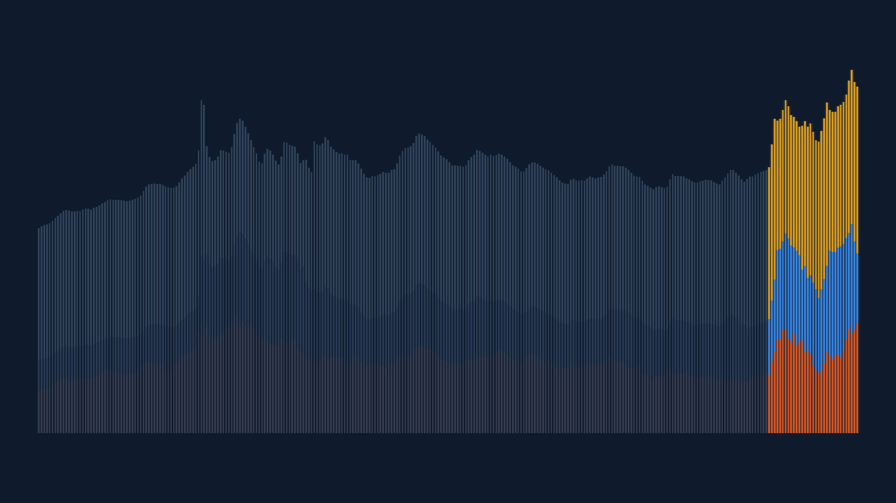
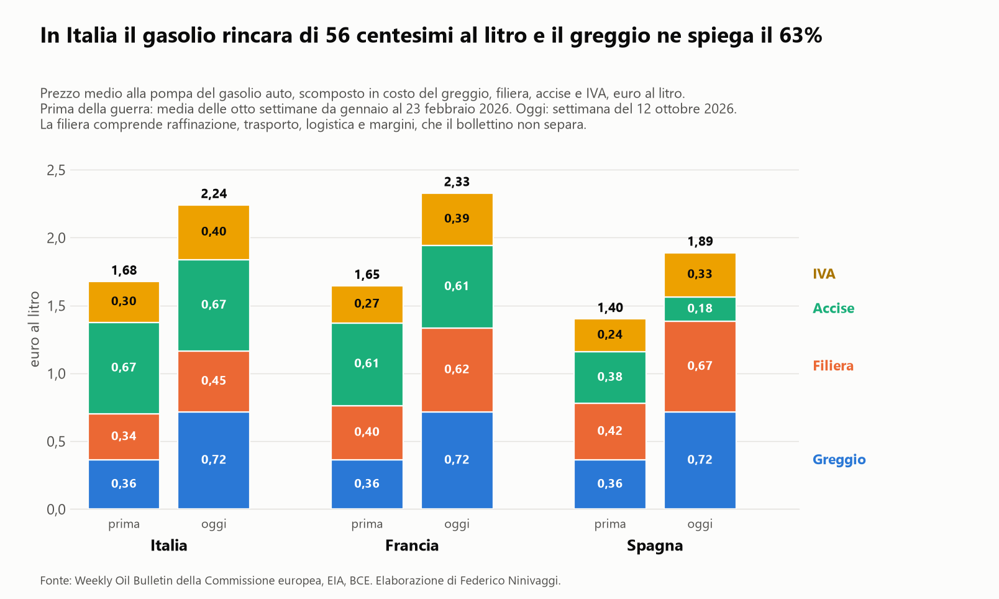
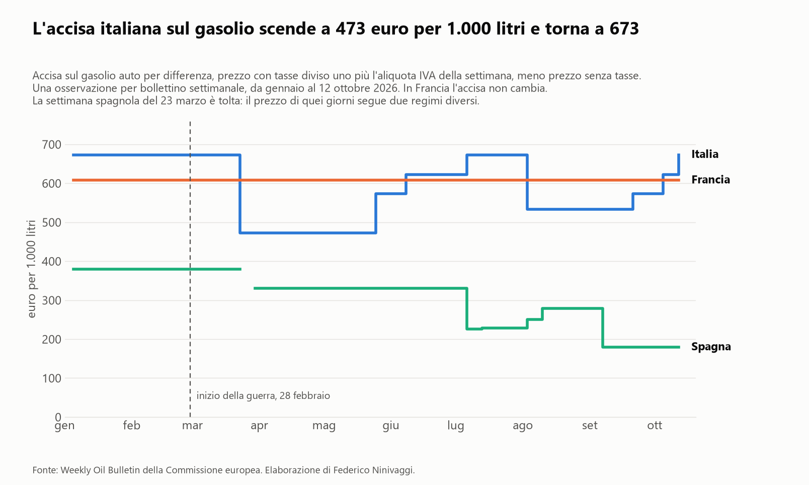
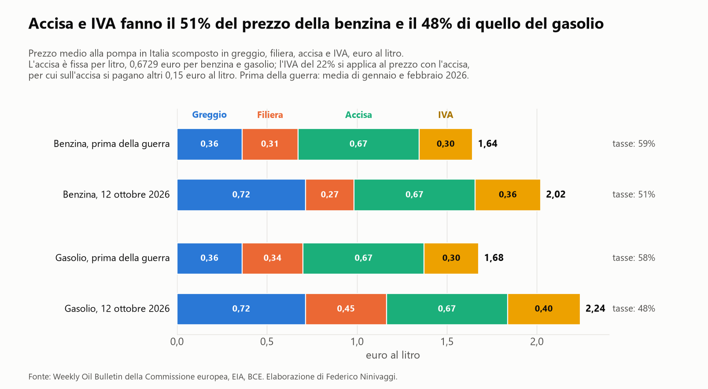
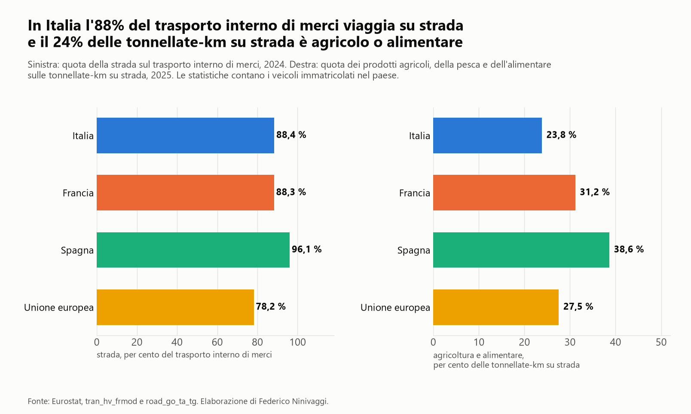
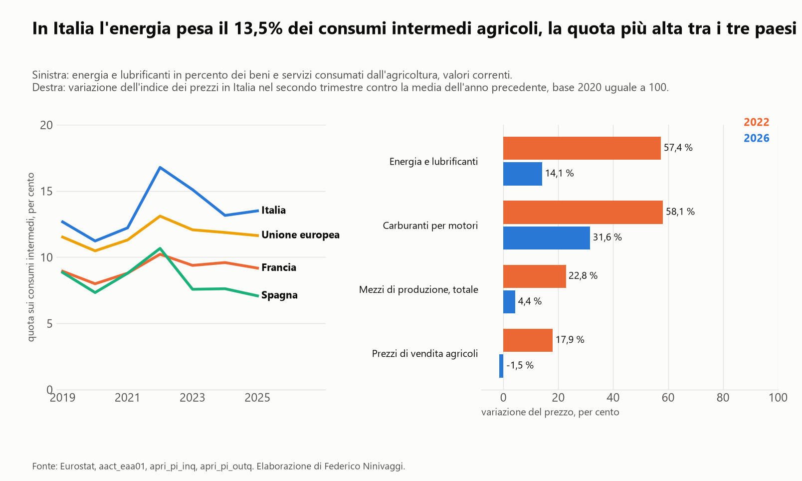
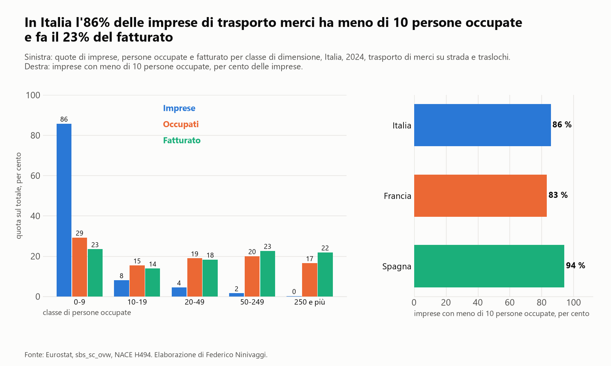

Il caro-carburanti e l’impatto su agricoltori e autotrasportatori
Nº 06 · long read · 20 ott 2026
Il caro-carburanti e l’impatto su agricoltori e autotrasportatori
Dall’inizio della guerra in Medio Oriente un litro di gasolio costa alla pompa 56,5 centesimi in più. Per i camion pesanti il costo del carburante sale del 42%, e i tagli alle accise non lo riducono.
↩ torna a Long read
Dall’inizio della guerra in Medio Oriente un litro di gasolio costa alla pompa 56,5 centesimi in più. Per i camion pesanti il costo del carburante sale del 42%, e i tagli alle accise non lo riducono.
Il 12 ottobre 2026 un litro di gasolio costava in Italia 2,24 euro alla pompa, mentre nelle settimane prima della guerra in Medio Oriente, ne costava 1,68 € (1). In Italia a settembre i prezzi al consumo dei carburanti superavano del 26,7% il livello di un anno prima, e in Francia e in Spagna l’aumento era ancora maggiore, del 34,3% e del 30,8% rispettivamente. I settori più colpiti dal rincaro sono quelli che lavorano con il gasolio: l’autotrasporto, che in Italia muove su strada quasi nove decimi delle merci, e l’agricoltura, che con il gasolio lavora i campi e porta i prodotti al mercato.
Da che cosa dipende il rincaro
Scomporre il prezzo alla pompa permette di capire cosa determina il rincaro, e quindi su quale parte del prezzo possono agire il governo e le imprese. La scomposizione è possibile perché due parti del prezzo si conoscono da fonti pubbliche: il greggio ha una quotazione giornaliera, e le tasse applicate sono fissate dalla legge. Il costo del greggio contenuto in un litro di gasolio si calcola a partire dal prezzo del Brent, il petrolio che fa da riferimento per i prezzi europei, e dal cambio tra euro e dollaro. La filiera, nome dato qui a tutto ciò che separa il greggio dal distributore, comprende raffinazione, trasporto, logistica e margini della vendita, mentre le tasse sono accise e l’IVA (2).
Dei 56,5 centesimi di rincaro di un litro di gasolio, 35,4 centesimi sono attribuibili al costo del greggio, il 63% del totale. Il Brent è passato da 68 a 127 dollari al barile, salendo dell’88%, e il greggio contenuto in un litro di gasolio da 36,2 a 71,5 centesimi. Il blocco dello Stretto di Hormuz, da cui prima della guerra passava «circa il 20% del greggio mondiale», è con ogni probabilità all’origine di gran parte di questo rialzo (1).
La filiera aggiunge 10,9 centesimi al litro, il 19% del rincaro. Le tasse aggiungono 10,2 centesimi al litro, il 18% del rincaro, tutti di IVA. L’accisa è un importo fisso per litro, e secondo i prezzi del bollettino petrolifero europeo il 12 ottobre era tornata al livello di prima della guerra. L’IVA è invece una percentuale, il 22%, che resta la stessa mentre l’importo cresce con il prezzo: su un litro che costa 1 euro prima dell’IVA sono 22 centesimi, su un litro che ne costa 2 sono 44 centesimi. L’IVA si calcola inoltre sul prezzo che comprende già le accise, per cui ogni rincaro del greggio o della filiera porta con sé un aumento dell’IVA.

In Francia un litro di gasolio è salito di 68,3 centesimi, e la filiera ha avuto un peso maggiore che in Italia, il 32% del rincaro contro il 19% italiano. I dati pubblici non permettono di spiegare la differenza: la filiera francese costava di più già prima della guerra, 40 centesimi al litro di gasolio contro 34 in Italia. In Spagna il governo ha ridotto l’accisa sul gasolio di 20 centesimi al litro, una misura più ampia dell’aumento dell’IVA, salita di 8,5 centesimi, per cui le tasse nel complesso sono scese di 11,5 centesimi mentre il prezzo saliva.
Le accise
Il governo italiano ha messo mano a più riprese all’accisa con l’obiettivo di calmierare il prezzo del carburante alla pompa. Il decreto legge 33 del 18 marzo 2026 l’ha ridotta su benzina e gasolio, e i decreti successivi ne hanno cambiato più volte la misura (3). Calcolata dai prezzi del bollettino petrolifero europeo, l’accisa sul gasolio scende di 20 centesimi al litro a partire dalla settimana del 23 marzo, risale a gradini fino a luglio, si riduce di nuovo ad agosto e torna al livello pieno nella settimana del 12 ottobre. Nel complesso l’accisa è rimasta ridotta per 25 settimane, mentre la Francia non ha toccato la propria.

Al livello pieno l’accisa italiana vale dal 1° gennaio 2026 672,90 euro ogni mille litri, cioè 67,29 centesimi per ogni litro di benzina o di gasolio (4). Dal testo unico del 1995 è un’aliquota sola, che ha fuso in una voce gli aumenti decisi nei decenni precedenti. L’elenco che torna a circolare quando il prezzo sale nomina proprio quegli aumenti: la guerra d’Etiopia del 1935, la crisi di Suez del 1956, il disastro del Vajont del 1963, l’alluvione di Firenze del 1966, i terremoti dal Belice all’Irpinia, la missione in Libano del 1983. Sono le tappe con cui l’aliquota ha raggiunto il livello attuale, e non imposte separate che si pagano ancora per quegli scopi: il sovrapprezzo del 1935, per esempio, fu revocato nel 1936. Dopo il 1995 l’accisa è stata aumentata almeno altre undici volte (4).
Accise e IVA insieme pesano sul prezzo più di quanto lasci intendere l’aliquota del 22%. Il 12 ottobre facevano il 51% del prezzo di un litro di benzina e il 48% di quello di un litro di gasolio, e l’IVA calcolata sull’accisa aggiungeva da sola 14,8 centesimi a ogni litro. Prima della guerra la quota delle tasse era più alta, il 59% sulla benzina e il 58% sul gasolio, perché l’accisa resta ferma in centesimi mentre il resto del prezzo sale.

Il prezzo che pagano le imprese
Il prezzo alla pompa è quello che paga il consumatore finale, mentre un’impresa in regime IVA ordinario detrae l’IVA, ovvero sottrae l’IVA pagata sui propri acquisti da quella incassata sulle proprie vendite e così la recupera. L’accisa invece non si recupera, per cui il costo di un litro di gasolio per un’impresa è il prezzo senza tasse più le accise: in Italia è passato da 1,37 a 1,84 euro al litro, 46,3 centesimi in più. In percentuale l’aumento è lo stesso della pompa, il 33,7%, essendo l’IVA proporzionale al prezzo.
Per l’autotrasporto pesante vale un regime a parte, quello del gasolio commerciale, per cui le imprese con veicoli da 7,5 tonnellate in su, di classe Euro 5 o superiore, pagano alla pompa l’accisa normale, e chiedono poi allo Stato, per ogni trimestre di consumi, la restituzione della parte che supera l’aliquota agevolata, che «resta fissata a 403,22 euro per mille litri». Per i consumi del secondo trimestre 2026 il rimborso è andato da 69,68 a 219,68 euro per mille litri di gasolio (5). Con l’accisa agevolata e senza IVA un litro di gasolio costa a un camion pesante 1,57 euro, rispetto a 1,10 prima della guerra, il 42% in più. Ne deriva una conseguenza poco nota: per questi veicoli i tagli dell’accisa non cambiano il costo del gasolio, perché quando l’accisa normale scende si riduce di pari importo il rimborso. Anche l’agricoltura usa un gasolio ad accisa agevolata, il gasolio agricolo.
Quanto conta la strada
Nel 2024 l’88,4% del trasporto interno di merci viaggiava in Italia su gomma, contro una media dell’Unione europea del 78,2%. In Francia la quota della strada era simile, l’88,3%, e in Spagna più alta, il 96,1% (6).

Nel 2025 i prodotti dell’agricoltura e dell’industria alimentare hanno rappresentato il 23,8% delle tonnellate-chilometro percorse dai camion italiani, rispetto al 31,2% in Francia e al 38,6% in Spagna. La tonnellata-chilometro misura una tonnellata di merce trasportata per un chilometro. Le statistiche usate qui sono i dati aperti di Eurostat sul trasporto di merci su strada, raccolti con un’indagine sui veicoli immatricolati in ciascun paese, e contano i camion del paese ovunque viaggino. I generi alimentari portati in Italia da camion stranieri restano quindi fuori dal conto, e il dato italiano sottostima probabilmente il peso del trasporto su gomma nella filiera alimentare.
Il carburante nei conti dell’agricoltura
Nel 2025 la voce «energia e lubrificanti» dei conti economici dell’agricoltura valeva il 13,5% dei consumi intermedi dell’agricoltura italiana, cioè dei beni e servizi che le aziende comprano e consumano per produrre: 4,19 miliardi di euro, contro l’11,6% della media europea (7). La voce comprende i carburanti: nel 2024, ultimo anno con il dettaglio, carburanti e altri combustibili ne facevano il 47%, e l’elettricità il 45%. In Francia e in Spagna il peso dell’energia sui consumi intermedi agricoli era più basso, del 9,2% e del 7,1%, mentre in Italia nel 2022 aveva raggiunto il 16,8%.

Nel secondo trimestre del 2026 i carburanti per motori comprati dalle aziende agricole italiane costavano il 31,6% in più della media del 2025, mentre i prezzi dei prodotti venduti scendevano dell’1,5%. Nel 2022 i prezzi di vendita erano invece saliti del 17,9% e avevano coperto parte dei costi. Per l’insieme dell’energia il rincaro italiano è stato più contenuto, il 14,1%, mentre in Francia, dove l’accisa non è stata ridotta, ha raggiunto il 37,0%.
Com’è fatto l’autotrasporto
Il trasporto di merci su strada contava in Italia nel 2024 55.799 imprese e 393.048 occupati, 7,0 occupati per impresa, con un fatturato di 65,4 miliardi di euro (8). L’85,8% delle imprese ha meno di dieci occupati e produce il 23,4% del fatturato del settore, mentre le imprese con almeno 250 occupati ne producono il 21,8%. Nel trasporto terrestre, che comprende anche quello di persone, la Lombardia raccoglie il 17,8% degli occupati e il Mezzogiorno nel suo insieme il 29,0%, 170.452 addetti.

Il margine operativo lordo, cioè quanto resta dei ricavi dopo aver pagato gli acquisti e il personale, prima di ammortamenti, interessi e imposte, corrisponde all’8,7% del fatturato del settore, e gli acquisti di beni e servizi, gasolio compreso, al 71%. Il Ministero delle infrastrutture e dei trasporti pubblica tabelle dei costi di esercizio di un’impresa di autotrasporto, che imprese e committenti usano come riferimento per trattare le tariffe. Nella versione aggiornata a marzo 2026 il gasolio vale tra il 20% e il 27% del costo per chilometro di un trattore con semirimorchio oltre 26 tonnellate (9).
In un conto semplificato, se un litro di gasolio commerciale costa stabilmente il 42% in più e il gasolio vale circa un quinto del costo per chilometro, il costo per chilometro cresce di circa l’8%, e se ne vale poco più di un quarto cresce di circa il 12%. Un’impresa media del settore che fattura 100 euro ne spende circa 91 e ne trattiene 8,7 di margine operativo lordo: se le tariffe restano ferme, costi più alti tra l’8% e il 12% le tolgono tra 7,6 e 10,5 euro, quanto basta a consumare quasi tutto il margine o ad azzerarlo. Le imprese piccole difficilmente potrebbero assorbire un aumento simile senza ritoccare le tariffe.
Le possibili soluzioni
Nel breve periodo
Le esperienze del 2022 indicano che lo sconto generalizzato alla pompa arriva ai consumatori solo in parte. In Spagna i distributori applicavano alla cassa uno sconto di 20 centesimi al litro e ne ottenevano il rimborso dall’amministrazione fiscale circa un mese dopo. Le stazioni con i prezzi più bassi hanno alzato i listini più delle altre dopo l’avvio della misura, trattenendo così una parte dello sconto, e l’effetto è stato più forte sul gasolio e tra le stazioni indipendenti. Le differenze di prezzo si sono riassorbite in un periodo tra 36 e 43 giorni (10). In Germania lo Stato ha ridotto l’imposta sui carburanti da giugno ad agosto 2022, con uno sconto pieno di quasi 17 centesimi per un litro di gasolio. Secondo uno studio condotto da Mats Kahl della Leuphana Universität di Lüneburg, ai consumatori ne sono arrivati in media poco meno di 15 centesimi, e meno nelle zone rurali (11).
Il Fondo monetario internazionale ha ricordato all’Eurogruppo, nel maggio 2026, che circa il 70% delle misure del 2022 non era mirato o distorceva i prezzi, e che un sussidio ai carburanti non mirato va per il 34% al quinto più ricco delle famiglie e per il 9% al quinto più povero (12). Per l’autotrasporto pesante, inoltre, il taglio dell’accisa non incide sostanzialmente, visto il meccanismo di rimborso esistente. Gli strumenti mirati esistono già: il credito d’imposta per le imprese di autotrasporto previsto dal decreto di marzo, nel limite di 100 milioni di euro, e quello per le imprese agricole, fino al 20% della spesa per carburante di marzo, aprile e maggio, con 90 milioni di euro (3). Chi dovesse scegliere come spendere le prossime risorse potrebbe ottenere di più rafforzando questi crediti e i trasferimenti alle famiglie a basso reddito, invece di ridurre l’accisa per tutti.
Nel medio periodo
Nel medio periodo conta la velocità con cui il costo del gasolio si trasmette nelle tariffe dell’autotrasporto, e lo strumento esiste già. Una norma del 2008 prevede che, nei contratti di trasporto che durano più di trenta giorni, la parte del corrispettivo che copre il carburante si adegui quando il prezzo del gasolio cambia di oltre il 2%. Il corrispettivo è il prezzo che il committente paga al trasportatore per il servizio. Dal 2022 questa clausola di adeguamento è un elemento obbligatorio di ogni contratto scritto, e si basa sulle rilevazioni mensili del prezzo del gasolio fatte dal Ministero dell’ambiente (13). Il calcolo è semplice: se il gasolio rincara del 10% e copre il 30% del costo del servizio, la tariffa sale del 3%. Per ottenerlo, però, il trasportatore deve indicare nel contratto o in fattura quanta parte del prezzo copre il carburante, e una guida dell’aprile 2026 della CNA, la Confederazione nazionale dell’artigianato e della piccola e media impresa, avverte che una richiesta fatta in forma semplificata è «soggetta a ritorsioni da parte del committente».
Il decreto di marzo ha chiesto al Ministero delle infrastrutture di aggiornare ogni mese, fino al 30 giugno, la voce gasolio delle tabelle dei costi, ma sul sito del Ministero, a metà ottobre, l’ultima versione disponibile è ferma al 17 marzo, diciotto giorni dopo l’inizio della guerra. Tabelle aggiornate ogni mese darebbero ai trasportatori una base pubblica per far valere la clausola, e sposterebbero parte del rischio dalle piccole imprese di trasporto ai committenti, che hanno margini e potere contrattuale maggiori.
Nel lungo periodo
Nel lungo periodo l’esposizione al prezzo del gasolio dipende dalla quota di merci che viaggia su strada e dal carburante usato. Con l’88,4% delle merci su gomma, 10 punti percentuali sopra la media europea, l’Italia avrebbe spazio per spostare una parte del traffico a lunga distanza su ferrovia e via mare, e per accelerare il ricambio dei mezzi verso motori più efficienti e alimentazioni diverse dal gasolio. Per l’agricoltura la via è simile: meccanizzazione più efficiente e una quota maggiore di energia prodotta in azienda.
Note e Riferimenti
Il Sole 24 Ore, «L’impatto della guerra in Iran», dossier lab24, https://lab24.ilsole24ore.com/guerra-iran-impatto-energia-gas-economia/. Prezzi al consumo dei carburanti: Eurostat, prc_hicp_minr, voce CP0722, tasso di variazione annuo, settembre 2026.
Commissione europea, Weekly Oil Bulletin, file storico dei prezzi con e senza tasse, settimane dal 2021 al 12 ottobre 2026; Brent giornaliero, U.S. Energy Information Administration, serie RBRTE; cambio euro-dollaro, Banca centrale europea. Prima della guerra: media degli otto bollettini dal 5 gennaio al 23 febbraio 2026. Greggio per litro: Brent diviso per il cambio e per 158,987 litri al barile, media della settimana precedente il bollettino. Accisa e IVA per differenza: prezzo con tasse diviso uno più l’aliquota IVA, meno il prezzo senza tasse.
Decreto legge 18 marzo 2026, n. 33, relazione illustrativa, articoli 2 e 3. Credito per le imprese agricole: articolo 8-ter del decreto legge 38/2026, decreto del Ministero dell’agricoltura del 24 luglio 2026, come riportato da ecnews.it l’11 settembre 2026.
Aliquota: Commissione europea, Weekly Oil Bulletin, foglio «Excise duties», Italia, valore in vigore dal 1° gennaio 2026. Storia dell’accisa: Pagella Politica, «No, non paghiamo ancora la guerra d’Etiopia con la benzina», 27 marzo 2018; D. Puente, «La storia infinita delle accise sul carburante e le promesse mai mantenute», Open, 27 luglio 2026.
Informativa dell’Agenzia delle dogane prot. n. 353642 del 24 giugno 2026, come riportata da edotto.com il 27 luglio 2026.
Eurostat, tran_hv_frmod, quota modale del trasporto interno di merci, 2024; road_go_ta_tg, trasporto di merci su strada per tipo di merce, gruppi NST 01 e 04, 2025.
Eurostat, conti economici dell’agricoltura aact_eaa01, valori correnti, voci «Energy; lubricants», «Electricity» e «Other fuels and propellants»; indici dei prezzi dei mezzi di produzione e dei prodotti agricoli apri_pi_inq e apri_pi_outq, base 2020, secondo trimestre 2026.
Eurostat, statistiche strutturali sulle imprese, sbs_ovw_act, ramo H4941, 2024; classi di dimensione sbs_sc_ovw, aggregato H494; regioni sbs_r_nuts2021, aggregato H49, occupati nelle unità locali, 2024. Mezzogiorno: Abruzzo, Molise, Campania, Puglia, Basilicata, Calabria, Sicilia e Sardegna.
Ministero delle infrastrutture e dei trasporti, «Valori indicativi di riferimento dei costi di esercizio dell’impresa italiana di autotrasporto di merci per conto di terzi aggiornati a marzo 2026», Tabella D, pubblicata il 17 marzo 2026, https://mit.gov.it/node/21883. Quote calcolate dall’autore sommando le voci del trattore con semirimorchio, sulle colonne dei valori minimi e massimi; la CNA ottiene dalle stesse tabelle il 19,75% e il 27,44% per i veicoli oltre 26 tonnellate, guida citata alla nota 13, p. 9. Conto del margine: quota del gasolio per rincaro del gasolio commerciale, applicata ai costi che restano dopo il margine operativo lordo; la tabella descrive un veicolo tipo e non i costi delle imprese reali.
M. Hidalgo-Pérez, N. Collado, Á. Martínez-Jorge, «Heterogeneous and dynamic pass-through of a fuel subsidy to consumers: Evidence from Spain», Universidad Pablo de Olavide, WP ECON 25.01, abstract a p. 1 e sezioni 3.1 e 3.2, pp. 4-5.
M. P. Kahl, «Was the German fuel discount passed on to consumers?», Energy Economics 138, 107843, 2024, come sintetizzato dalla Leuphana Universität il 27 agosto 2024. Sulla benzina il passaggio è stato completo secondo J. Dovern et al., Energy Economics 126, 106948, 2023.
Euronews, «EU countries need more targeted measures to tackle soaring energy prices, says IMF’s Helge Berger», 6 maggio 2026.
Articolo 83-bis, comma 5, del decreto legge 25 giugno 2008, n. 112; articolo 6, comma 3, lettera d, del decreto legislativo 21 novembre 2005, n. 286, come modificato dall’articolo 14 del decreto legge 21 marzo 2022, n. 21. Testi, esempio di calcolo e citazione da CNA, «Guida all’adeguamento del corrispettivo di trasporto al costo del carburante», aprile 2026, pp. 3, 10 e 11.
Uscito su LinkedIn il 20 ottobre 2026: l’articolo originale.
Federico Ninivaggi · 20 ottobre 2026